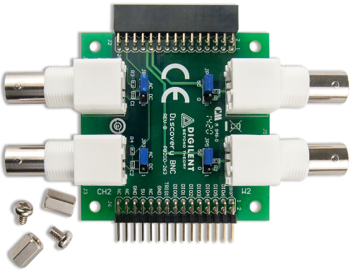

The Analog Discovery BNC adapter board is intended to be used with Digilent's Analog Discovery tool to enable the use of standard BNC terminated test leads and probes. The adapter board enables the user to AC couple or DC couple single-ended signals to the oscilloscope in the Analog Discovery 2.
Note the default coupling jumper is at AC position which eliminates DC components.
The probe at 10x needs to be tuned.

For more information, visit the reference page.